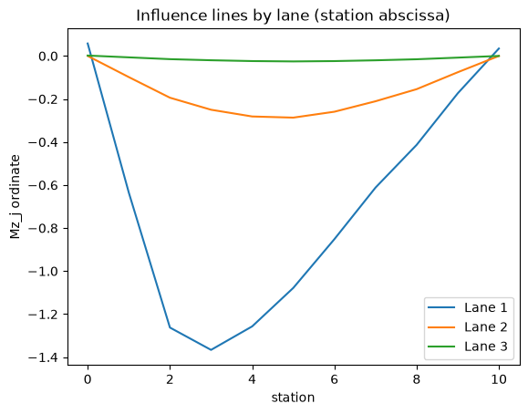
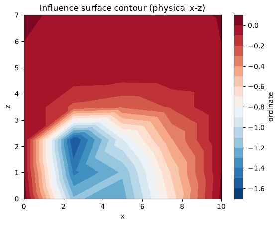
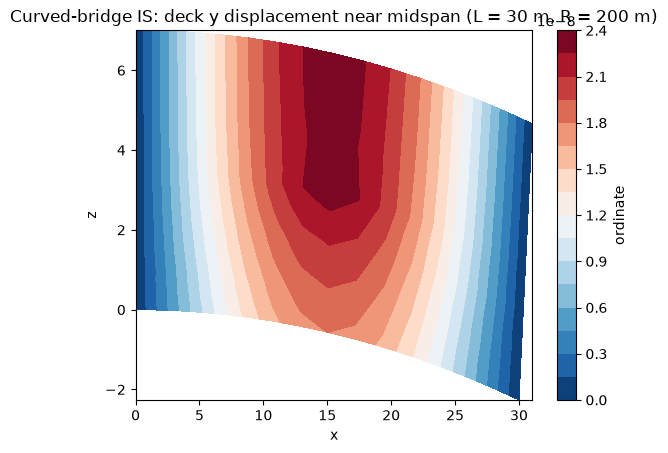

Influence Lines and Surfaces#
This notebook demonstrates the recommended influence-analysis workflow in ospgrillage:
multi-lane influence lines in one result object/file,
2D and path-overlay influence-line plotting,
station-based influence-surface extraction,
physical-coordinate influence-surface plotting for skewed/curved geometry,
semantic NetCDF output naming (
.il.nc/.is.nc) and CSV export.
[1]:
import sys
from pathlib import Path
cwd = Path.cwd().resolve()
for candidate in [cwd, *cwd.parents]:
src_dir = candidate / "src"
if (src_dir / "ospgrillage").exists():
sys.path.insert(0, str(src_dir))
break
import ospgrillage as og
try:
import plotly.io as pio
pio.renderers.default = "notebook_connected"
except Exception:
pass
Technical context#
shape_function="hermite"uses Hermite interpolation on quadrilateral regions and a DKT-style condensed triangular distributor on 3-node skew regions.Influence lines often use
load_coord="station"because station is a stable abscissa along a lane path even when the bridge is skewed/curved.Influence surfaces are built from admissible mesh station points and retain mapped physical (
x,z) coordinates for plotting/export.
Build a compact bridge model#
[2]:
concrete = og.create_material(material="concrete", code="AS5100-2017", grade="50MPa")
main_section = og.create_section(A=0.896, J=0.133, Iy=0.213, Iz=0.259, Ay=0.233, Az=0.58)
slab_section = og.create_section(A=0.04428, J=2.6e-4, Iy=1.1e-4, Iz=2.42e-4, Ay=3.69e-1, Az=3.69e-1, unit_width=True)
edge_section = og.create_section(A=0.044625, J=2.28e-3, Iy=2.23e-1, Iz=1.2e-3, Ay=3.72e-2, Az=3.72e-2)
main_beam = og.create_member(member_name="Main Beam", section=main_section, material=concrete)
slab = og.create_member(member_name="Slab", section=slab_section, material=concrete)
edge_beam = og.create_member(member_name="Edge Beam", section=edge_section, material=concrete)
bridge = og.create_grillage(
bridge_name="Influence Demo",
long_dim=10,
width=7,
skew=0,
num_long_grid=7,
num_trans_grid=5,
edge_beam_dist=1,
mesh_type="Ortho",
)
bridge.set_member(main_beam, member="interior_main_beam")
bridge.set_member(edge_beam, member="exterior_main_beam_1")
bridge.set_member(edge_beam, member="exterior_main_beam_2")
bridge.set_member(edge_beam, member="edge_beam")
bridge.set_member(slab, member="transverse_slab")
bridge.set_member(edge_beam, member="start_edge")
bridge.set_member(edge_beam, member="end_edge")
bridge.create_osp_model(pyfile=False)
target_element = bridge.get_element(member="interior_main_beam", options="elements")[0];
Material library unable to be read; using default library
Influence lines from multiple lane paths#
[3]:
paths = {
"Lane 1": og.Path(start_point=og.Point(0, 0, 1.5), end_point=og.Point(10, 0, 1.5), increments=11),
"Lane 2": og.Path(start_point=og.Point(0, 0, 3.5), end_point=og.Point(10, 0, 3.5), increments=11),
"Lane 3": og.Path(start_point=og.Point(0, 0, 5.5), end_point=og.Point(10, 0, 5.5), increments=11),
}
ils = bridge.analyze_influence_lines(
paths=paths,
axle_load=1.0,
shape_function="hermite",
);
[4]:
ils.plot(
array="forces",
component="Mz_j",
element=target_element,
load_coord="station",
title="Influence lines by lane (station abscissa)",
ylabel="Mz_j ordinate",
);

[5]:
fig_il_path = ils.plot(
array="forces",
component="Mz_j",
element=target_element,
backend="plotly",
view="path",
load_coord="station",
title="Influence lines overlaid on axle paths",
show=False,
);
# Optional in an interactive notebook frontend:
# fig_il_path.show()
---------------------------------------------------------------------------
ModuleNotFoundError Traceback (most recent call last)
File ~/work/ospgrillage/ospgrillage/src/ospgrillage/postprocessing.py:207, in _import_plotly()
206 try:
--> 207 import plotly.graph_objects as go
209 return go
ModuleNotFoundError: No module named 'plotly'
During handling of the above exception, another exception occurred:
ImportError Traceback (most recent call last)
Cell In[5], line 1
----> 1 fig_il_path = ils.plot(
2 array="forces",
3 component="Mz_j",
4 element=target_element,
File ~/work/ospgrillage/ospgrillage/src/ospgrillage/osp_grillage.py:385, in InfluenceLineResults.plot(self, **kwargs)
383 plot_kwargs = dict(kwargs)
384 plot_kwargs.setdefault("dataset", self.dataset)
--> 385 return plot_influence_line(self.get_line(**kwargs), **plot_kwargs)
File ~/work/ospgrillage/ospgrillage/src/ospgrillage/postprocessing.py:940, in plot_il(il, **kwargs)
938 if backend != "plotly":
939 raise ValueError("plot_il(view='path') currently requires backend='plotly'")
--> 940 fig = _plot_il_path_plotly(lines, **kwargs)
941 if title is not None:
942 fig.update_layout(title=title)
File ~/work/ospgrillage/ospgrillage/src/ospgrillage/postprocessing.py:667, in _plot_il_path_plotly(lines, **kwargs)
665 def _plot_il_path_plotly(lines, **kwargs):
666 """Plot one or more influence lines along their load paths on the bridge model."""
--> 667 go = _import_plotly()
668 dataset = kwargs.get("dataset", None)
669 if dataset is None:
File ~/work/ospgrillage/ospgrillage/src/ospgrillage/postprocessing.py:211, in _import_plotly()
209 return go
210 except ImportError:
--> 211 raise ImportError(
212 "plotly is required for interactive plots. "
213 "Install it with: pip install ospgrillage[gui]"
214 )
ImportError: plotly is required for interactive plots. Install it with: pip install ospgrillage[gui]
Influence surface from admissible station grid#
[6]:
iss = bridge.analyze_influence_surfaces(
name="Deck IS",
point_load=1.0,
shape_function="hermite",
);
[7]:
iss.plot(
array="forces",
component="Mz_j",
element=target_element,
x_coord="longitudinal_station",
y_coord="transverse_station",
coordinate_space="physical",
title="Influence surface contour (physical x-z)",
);

[8]:
fig_is_3d = iss.plot(
array="forces",
component="Mz_j",
element=target_element,
x_coord="longitudinal_station",
y_coord="transverse_station",
coordinate_space="physical",
backend="plotly",
view="surface3d",
title="Influence surface mapped to physical deck coordinates",
show=False,
);
# Optional in an interactive notebook frontend:
# fig_is_3d.show()
---------------------------------------------------------------------------
ModuleNotFoundError Traceback (most recent call last)
Cell In[8], line 1
----> 1 fig_is_3d = iss.plot(
2 array="forces",
3 component="Mz_j",
4 element=target_element,
File ~/work/ospgrillage/ospgrillage/src/ospgrillage/osp_grillage.py:469, in InfluenceSurfaceResults.plot(self, **kwargs)
467 def plot(self, **kwargs):
468 """Reduce and plot one influence surface."""
--> 469 return plot_influence_surface(self.get_surface(**kwargs), **kwargs)
File ~/work/ospgrillage/ospgrillage/src/ospgrillage/postprocessing.py:1203, in plot_is(isurface, **kwargs)
1200 return ax
1202 if backend == "plotly":
-> 1203 import plotly.graph_objects as go
1205 fig = kwargs.get("ax", None)
1206 has_existing_traces = fig is not None and len(getattr(fig, "data", ())) > 0
ModuleNotFoundError: No module named 'plotly'
Curved Deck Example#
Curved meshes follow the same API as the dedicated curve_mesh notebook. The compact check below uses a moderate highway-style curvature (long_dim=30, mesh_radius=200) and plots the influence surface in physical x-z space.
[9]:
curved_bridge = og.create_grillage(
bridge_name="Curved Influence Demo",
long_dim=30,
width=7,
skew=0,
num_long_grid=7,
num_trans_grid=15,
edge_beam_dist=1,
mesh_type="Ortho",
mesh_radius=200,
)
curved_bridge.set_member(main_beam, member="interior_main_beam")
curved_bridge.set_member(edge_beam, member="exterior_main_beam_1")
curved_bridge.set_member(edge_beam, member="exterior_main_beam_2")
curved_bridge.set_member(edge_beam, member="edge_beam")
curved_bridge.set_member(slab, member="transverse_slab")
curved_bridge.set_member(edge_beam, member="start_edge")
curved_bridge.set_member(edge_beam, member="end_edge")
curved_bridge.create_osp_model(pyfile=False)
curved_nodes = curved_bridge.get_nodes()
curved_target_node = min(
curved_nodes,
key=lambda tag: (
(curved_nodes[tag]["coordinate"][0] - 15.0) ** 2
+ (curved_nodes[tag]["coordinate"][2] - 3.5) ** 2
),
)
curved_iss = curved_bridge.analyze_influence_surfaces(
name="Curved Deck IS",
point_load=1.0,
shape_function="hermite",
);
ax_curved = curved_iss.plot(
array="displacements",
component="y",
node=curved_target_node,
x_coord="longitudinal_station",
y_coord="transverse_station",
coordinate_space="physical",
title="Curved-bridge IS: deck y displacement near midspan (L = 30 m, R = 200 m)",
);
ax_curved.set_aspect("equal", adjustable="box");

Save combined influence outputs#
Both result objects retain save metadata and can be written directly to single NetCDF files. If a stem is given, semantic suffixes are applied: *.il.nc for influence lines and *.is.nc for influence surfaces.
[10]:
il_nc = ils.save("lane_ils")
is_nc = iss.save("deck_is")
print(f"Saved {il_nc}")
print(f"Saved {is_nc}")
Saved lane_ils.il.nc
Saved deck_is.is.nc
Export CSV#
IL CSV is long-form with one row per path station.
IS CSV can be exported as station-grid (
layout="grid") and optional companion point map with physical coordinates.
[11]:
il_csv = ils.to_csv(
"lane_ils.csv",
array="forces",
component="Mz_j",
element=target_element,
load_coord="station",
)
is_csv = iss.to_csv(
"deck_is_grid.csv",
array="forces",
component="Mz_j",
element=target_element,
include_physical_coords=True,
)
print(f"Saved {il_csv}")
print(f"Saved {is_csv}")
Saved lane_ils.csv
Saved {'grid': 'deck_is_grid.csv', 'points': 'deck_is_grid_points.csv'}